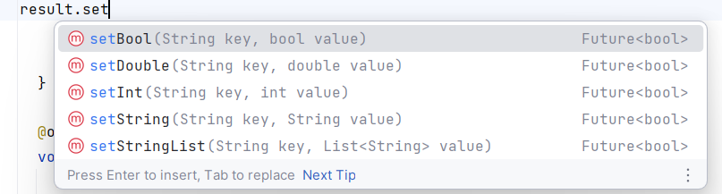

Whenever you want to give a message to the user, normally a window shows up with a short message. It can either be an error message, or something like password doesn't match. Android uses a Snackbar window that shows up at the bottom of the window for a few seconds and then disappears:
snackBar = SnackBar( content: Text('Yay! A SnackBar!') );
ScaffoldMessenger.of(context).showSnackBar(snackBar);
Let's use last week's code example to add this code to a button onPress handler.
showDialog<String>(
context: context,
builder: (BuildContext context) => AlertDialog(
title: const Text('AlertDialog Title'),
content: const Text('AlertDialog description'),
actions: <Widget>[
],
),
),
showDialog is a function that will make an alert dialog appear. You have 3 things to provide:
SharedPreferences let you save variables to your device and then retrieve them the next time you run the application. The SharedPreferences object uses the Singleton pattern, where there is only one object in the whole program. However, the SharedPreferences library is not normally part of flutter. You must use the "shared_preferences" package to your project. You can do this by opening a command terminal in the same folder as your project, and running the command flutter pub add shared_preferences. This should change your pubspec.yaml file to add the latest version of the shared_preferences package. To retrieve the object, we call:
// Load and obtain the shared preferences for this app.
final prefs = await SharedPreferences.getInstance();
In order to keep the application as responsive as possible, reading data from the hard disk is done asynchronously. The keyword await means to wait until the function returns. This will have many other implications that in the end will make life really hard. It's easier to use the .then() which is a function that will be called once the getInstance() has finished. The function getInstance() returns an object of type SharedPreferences, so the .then() function needs a lambda function that accepds a SharedPreference object as the result:
SharedPreferences.getInstance().then((result) {
});
To write data to the disk, we have several setter functions to chose from:

There is a limit to what types of data you can save:
The first parameter is always the key (or variable name). The second parameter is the value that you want to save.
To retrieve the value, you use the getString("key") if you used setString(). If you used setInt("AA", value), then you would use getInt("AA") to get the value back. If you used setDouble("BBB", value), then you would use getDouble("BBB") to get the value back.
The getter functions return nullable objects because the variable might not be saved yet.
If there is no value associated with the key, then the function returns null.
So in reality, getInt("AA") returns an object of type Int?, or nullable Int.
Normally you would use this when the user clicks a button, like "login" some other button. Whenever you read a variable and then want to save it, you can use the shared preferences:
void buttonPressed( ){
SharedPreferences.getInstance().then( (sharedPrefs) {
sharedPrefs.setString("LoginName", loginStringController.getValue().text);
} );
}
This will save the string that was typed along with the variable name "LoginName". The next time the user runs your application, your program will run the initState() function as it is loading. This is where you should be reading the values that were saved to disk:
var loginName = result.getString("Word");
if(loginName != null){
_controller.text = loginName;
}
If you want to just delete a value, then you can use the remove( ) function and pass in the key (or variable name) that you want to remove:
sharedPrefs.remove("LoginName");